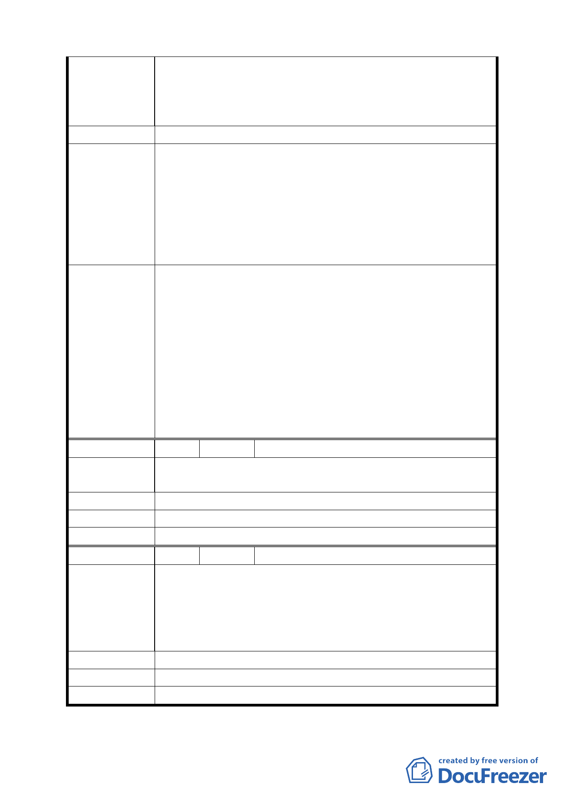

以才要爭取台北好好看獎勵。在加上房屋部分已成為危
樓，希望權責單位能正視此問題，亦望能公開審議標準，
讓建設公司能依據住戶需要配合權責單位，這樣才符合「台
北好好看」之美意。
建 議 辦 法 同上
1. 「臺北好好看」之審議標準係由本府成立容積調整專
案審查小組，本於政策效益、公平性及公益性之調整
原則，進行容積調整規範之相關配套規劃。
市府回應意見 2. 容積獎勵之原則係以提升公共利益為前提，審查小組
之審議標準係依本府 97 年 1 月 31 日府都規字第
09730020100 號公告實施之「徵求參與『促進都市再生
2010 年臺北好好看』開發計劃案」內之規定辦理。
1. 依市府回應意見辦理。
2. 本案依 98 年 7 月 10 日召開「促進都市再生 2010 年臺
北好好看」開發計畫老舊社區 A 組第 3 次專案小組會議
審查意見適用申請臺北好好看之「廣場式開放空間」容
委員會決議
積獎勵項目。惟開發單位應就本案基地北側道路交叉口
交通瓶頸，周邊道路路幅、交通容受力等衝擊評估、以
及就本案開發對公益性與地區性需求之環境貢獻度等
提出具體改善方案與評估分析，至於是項容積獎勵額
度，請臺北市都市設計及土地使用開發許可審議委員會
審查本案時整體審視。
編 號 2 陳情人 楊秀里
陳情理由
我是遷建基地的住戶，聽聞郝市長非常重視都市更新希望
此案趕快更新成功，這樣也會帶動遷建基地更新的機會。
建 議 辦 法 同上
市府回應意見 同編號 1 回應。
委員會決議 同編號 1 決議。
編 號 3 陳情人 林正榮
我是 921 地震黃單區住戶，建築物安全堪慮，實在住的很
不安心，這次因台北好好看的獎勵容積增加了本基地更新
陳 情 理 由 的機會。之前本案有送都市計畫審查據說台北好好看獎勵
被取消，這次好像又有機會爭取，希望政府不要再取消獎
勵，謝謝。
建 議 辦 法 同上。
市府回應意見 同編號 1 回應。
委員會決議 同編號 1 決議。
- 11 -